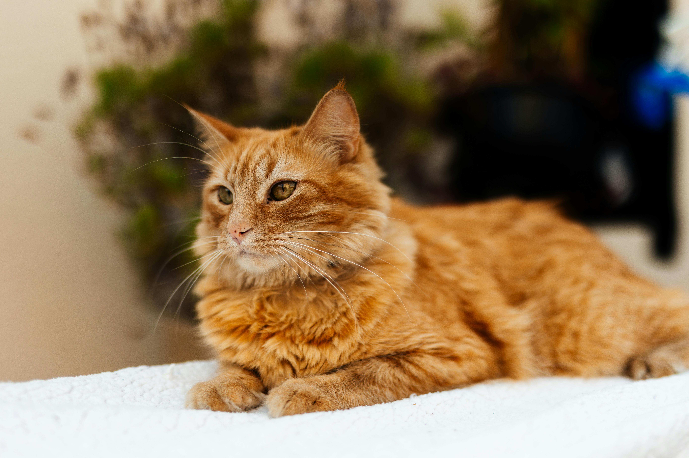

Independent, Elegant, and Fiercely Cute.
Discover the fascinating lives of our feline friends.

About Cats
Cats have been companions to humans for thousands of years. Known for their agility, independence, and affectionate nature (when they choose to be), they are one of the most popular pets worldwide. Whether they are curling up in a sunbeam or chasing a laser pointer, cats bring joy and entertainment to millions of homes.
Fun Facts
Sleepy Heads
Cats spend 70% of their lives sleeping. That's a lot of catnaps!
Super Ears
A cat's ear has 32 muscles, allowing them to rotate their ears 180 degrees.
Unique Nose
A cat's nose print is unique, much like a human's fingerprint.